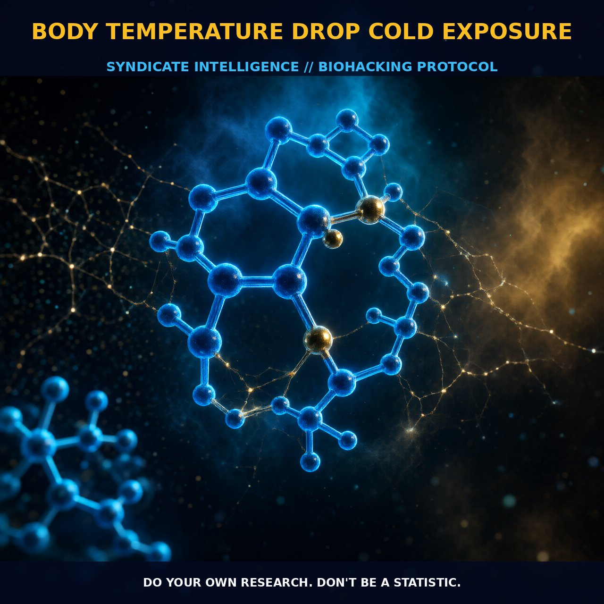

Enhancing Metabolism with Cold Exposure

1. The Mechanism
Body temperature drop through cold exposure triggers a series of physiological adaptations. When the body is subjected to cold, the first line of defense involves vasoconstriction, narrowing blood vessels to minimize heat loss from the skin. This process is mediated by α-adrenergic receptors, responding to norepinephrine, a hormone and neurotransmitter released in response to cold. As the body temperature drops, the metabolic rate increases to generate more heat. This metabolic boost involves the breakdown of glycogen and fatty acids, which are converted into heat through the process of thermogenesis.
Brown adipose tissue (BAT), a specialized type of fat tissue rich in mitochondria, becomes activated. BAT is particularly active in cold conditions, generating heat through the uncoupling protein 1 (UCP1) that facilitates proton leakage across the mitochondrial membrane, dissipating energy that would otherwise be used for ATP production.
Cold exposure also triggers a complex hormonal and neurological signaling network. Cold-sensitive neurons in the hypothalamus detect the drop in temperature and initiate a series of hormonal responses, including the release of thyroid-stimulating hormone (TSH) and thyroid hormones such as T3 and T4 to increase metabolic rate and heat production. The pituitary gland and adrenal glands become more active, releasing cortisol and epinephrine, which further stimulate thermogenesis and metabolic processes. The cold-induced activation of the sympathetic nervous system leads to the release of catecholamines such as norepinephrine and epinephrine, promoting vasodilation and increased metabolic rate in peripheral tissues.
2. Biological Leverage
Cold exposure harnesses several key biological pathways that enhance overall health and metabolic efficiency. The activation of BAT through cold exposure enhances the metabolism of fats and sugars, contributing to weight loss and improved insulin sensitivity. The increased metabolic rate boosts the production of antioxidants such as glutathione, mitigating oxidative stress and inflammation.
Cold exposure stimulates the release of growth hormone, crucial for muscle repair and growth. This increase in growth hormone levels can lead to enhanced muscle protein synthesis and improved recovery from physical activity. Cold-induced vasoconstriction and subsequent vasodilation help flush out toxins and waste products from the muscles, contributing to a sense of rejuvenation and improved physical performance. Cold exposure also enhances cognitive function through the increase in blood flow to the brain and the release of endorphins, providing a natural analgesic effect and reducing pain. Additionally, cold exposure improves sleep quality, mimicking the natural drop in body temperature that occurs during the onset of sleep, aiding in the regulation of the sleep-wake cycle.
3. Tactical Implementation
To effectively implement cold exposure for optimal health benefits, consider several practical factors. Begin with brief and gradual exposure to cold, such as a 5-minute cold shower, to acclimate your body. Gradually increase the duration and intensity of the cold exposure over time to build tolerance. For maximal benefit, incorporate cold exposure during the morning or late afternoon, when metabolic rates are naturally higher. Cold showers or ice baths can be particularly effective, stimulating the activation of BAT and promoting vasodilation.
Cold exposure can be stacked with other biohacking strategies to enhance their effects. Combining cold showers with intermittent fasting amplifies metabolic benefits, increasing the rate of fat oxidation and enhancing insulin sensitivity. Integrating cold exposure with high-intensity exercise optimizes muscle recovery and growth hormone release. For individuals with a history of cardiovascular issues, consult a healthcare provider before initiating a cold exposure regimen to ensure safety.
Prostar Life Hack
Start with brief cold showers (5 minutes) and gradually increase duration and intensity. Incorporate cold exposure during morning or late afternoon for maximum metabolic boost.
[ AUTHOR: LEAD TECHNICAL RESEARCHER ]